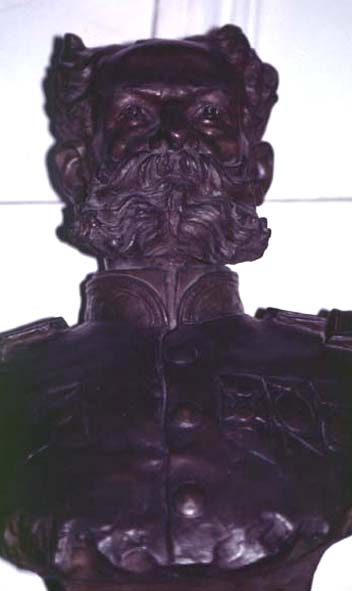

|
Statue fever
|
|  |
| Décio Villares, Deodoro da Fonseca |
In the final decades of the nineteenth century, a feverish urge to erect monuments and statues seemed to have gripped the capitals of Argentina, Brazil and Chile. Only occasionally, however, would they bluntly depict the present rulers, as on Décio Villares´s study for a monument to Deodoro da Fonseca, Brazil´s military head of staff and first republican president after 1889. More often, those depicted would be the heroes of the past, converting urban space into an open-air history lesson, in which a canonic national memory would materialise.
See also the guided tour "monument" on the making of foundational events and national heroes.